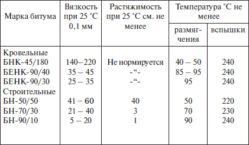
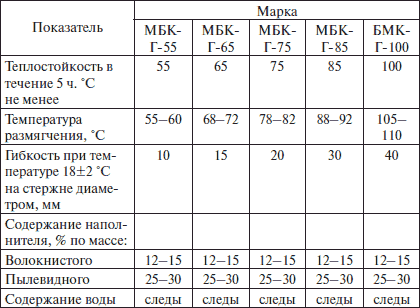

Кровельные мастики, эмульсии, пасты.

Мастики представляют собой искусственные смеси органических вяжущих с минеральными наполнителями и добавками, улучшающими качества мастик. В зависимости от вида вяжущего могут быть: битумные, резинобитумные, дегтевые и битумно-полимерные мастики. В качестве наполнителей используются асбест, асбестовая пыль, минеральная вата (коротковолокнистая), известковые пылевидные порошки, порошки талька, трепела, кирпича, кварца, доломита, золы от пылеугольного сжигания минерального топлива или различные комбинации этих наполнителей. Наполнители повышают теплостойкость и твердость мастик, уменьшают их хрупкость при низких температурах, сокращают расход вяжущего вещества. Волокнистые наполнители, армируя материал, повышают его сопротивление изгибу.
Мастики могут быть горячие, применяемые с подогревом до 160 °C для битумных мастик, и холодные, в состав которых входит растворитель. Холодные мастики при температуре воздуха до +5 °C используются без подогрева, при более низких температурах – с подогревом до 60–70 °C.
По своему назначению мастики бывают приклеивающие (для приклеивания рулонных материалов и устройства защитного слоя кровли), кровельно-изоляционные (для устройства мастичных кровель), гидроизоляционно-асфальтовые (для устройства пароизоляции) и антикоррозионные (для устройства защитного слоя кровли из фольгоизола).
По способу отверждения мастики бывают отверждаемые и неотверждаемые. По виду разбавителя мастики делятся на: содержащие воду, с органическими растворителями и с жидкими органическими веществами.
На воздухе мастики затвердевают в течение часа, приобретая при этом гладкую эластичную поверхность, стойкую к атмосферным воздействиям. Они водостойки и имеют высокую клеящую способность.
Выполняя кровлю из битумных материалов, необходимо помнить об их особенностях во время эксплуатации. Битумные кровли очень чутко реагируют на различные атмосферные воздействия и на перепады температуры. Сильный ветер часто срывает отдельные плохо приклеенные полотнища, особенно с карнизов. Ветер и солнце действуют иссушающе на верхний слой кровельного ковра, а сухая кровля начинает реагировать даже на незначительные изменения атмосферных условий: она сильно увеличивается в объеме при поглощении влаги и резко уменьшается при ее потере. Эти «колебания» буквально коробят верхний слой.
Солнце отрицательно влияет и на качество клеющих мастик – оно убивает летучие вещества. Под воздействием солнечной радиации или низких температур мастика твердеет, теряет свою эластичность. В результате снижается прочность и самого рулонного кровельного материала, в котором образуются мелкие трещины. Осенью в трещины вместе с влагой попадают различные бактерии, разрушающие волокна кровельных полотнищ.
Град пробивает битумную кровлю, образуя отверстия с рваными краями. Частые дожди при переменной температуре воздуха также являются причиной образования небольших трещин, через которые вода просачивается под верхний слой кровельного ковра и образуют так называемые «водяные мешки».
Высокая летняя температура сильно нагревает битумную кровлю, ее температура поднимается до 50 °C, т. е. выше температуры окружающего воздуха. При этом часть влаги в виде капель и паров, попавшая ранее в поры и трещины, начинает расширяться, образуя в наружных слоях кровли вздутия, а иногда и разрывы. Кроме того, сильное нагревание кровли приводит и к сильному нагреванию мастики, в результате чего с одной стороны расплавленная мастика может заполнить собой появившиеся отверстия и трещины, с другой – с крутых скатов могут сползти полотнища кровельного ковра.
Битумные мастикиТребование
Мастики должны быть однородными, без включений частиц наполнителя, не пропитанных вяжущими веществами; удобонаносимыми; при их изготовлении и эксплуатации в окружающую среду не должны попадать вредные выделения в количествах выше допустимых; с теплостойкостью не ниже 70 °C; водонепроницаемыми; биостойкими; прочно склеивающими слои рулонных материалов; долговечными.
Вяжущими веществами, применяемыми при изготовлении битумных мастик, служат искусственные нефтяные битумы, получаемые в результате переработки нефти и ее смолистых остатков.
Нефтяные битумы имеют цвет черный или черно-бурый, при нагревании они изменяют вязкость. В зависимости от вязкости они делятся на: твердые, полутвердые и жидкие. Твердые и полутвердые битумы применяют для изготовления кровельных и гидроизоляционных рулонных материалов, битумных мастик и лаков, жидкие – в качестве пропиточного материала основы рулонных кровельных материалов.
Марка битума устанавливается по основным его свойствам: вязкости, растяжимости, температуре размягчения и температуре вспышки ( табл. 4).
Таблица 4. Физико-механические свойства битумов
Таблица 5. Физико-механические свойства кровельных битумных горячих мастик

Вязкость характеризуется глубиной проникания иглы, мм. Чем больше глубина, тем меньше вязкость.
Растяжимость битума характеризуется длиной вытянутого образца в момент его разрыва, см.
Температура размягчения характеризует пригодность битума для использования в различных температурных условиях.
Температура вспышки – это та температура, которая является технологическим фактором при работе с битумом.
В обозначении марок буквы показывают «мастика битумная, кровельная и гидроизоляционная», а цифры – степень теплостойкости материала.
Марка горячей битумной мастики выбирается в зависимости от района строительства и уклона кровли. Для северных районов при уклонах кровель от 0 до 2,5 % применяют марку МБК-К-55, при уклонах 5-10 % – марку МБК-Г-75, при уклоне 10–25 % – марку МБК-Г-85. Для южных районов при уклонах кровель 0–2,5 % – применяют марку МБК-Г-65, при уклонах 2,5-10 % – марку МБК-Г-85, при уклонах 10–25 % – марку МБК-Г-100, при устройстве водонаполненных кровель – марку МБК-Г-55.
Для получения холодной битумной мастики в готовую битумную смесь вводят органические растворители (соляровое масло, лак, керосин) и пластификаторы, а также антисептики. Соляровое масло растворяет битум и хорошо просачивается в осн ование рулонного материала, что обеспечивает не только качественное склеивание отдельных слоев рулонной кровли, но и прочное соединение рулонного материала с основанием.
Холодные битумные мастики «Кровлелит-АГ», «Вента-У» или МББ-Х-120 «Вента», «МБК-Х-1» имеют преимущества перед горячими мастиками: из-за малой толщины наносимого слоя мастики снижается расход битума, с поверхности рулонного материала не нужно убирать мелкую минеральную посыпку, т. к. она, впитываясь мастикой, начинает выполнять роль наполнителя, повышая при этом вязкость приклеивающего слоя.
Резинобитумная мастика изоляционная. Холодная мастика изготовляется из однородной смеси сплава кровельных битумов, мелкой резиновой крошки, пластификатора и антисептика. Выпускается мастика следующих марок: МБР-65, МБР-75, МБР-90, МБР-100. Ее эластичность, гибкость и морозостойкость больше, чем те же показатели горячей кровельной битумной мастики.
Применяется при устройстве многослойных кровельных покрытий, для приклеивания и склеивания рулонных материалов.
Битумно-латексные мастики приготавливают, смешивая битумную и латексную эмульсии непосредственно перед нанесением на покрытие. Эмульсии смешивают при температуре не выше 40 °C в обычных мешалках. Мастику готовят следующих марок: ЭБЛ-Х-75, ЭБП-Х-85, ЭБП-Х-100. Приготовление состоит в подготовке битумного вяжущего, эмульгатора и стабилизатора и диспергировании вяжущего в воде в присутствии эмульгатора и стабилизатора.
В зависимости от уклона кровли и региона строительства применяют различные битумно-латексные мастики теплостойкостью 75-100 °C.
Битумно-латексно-кукерсольные мастики. Рулонные кровли на мастиках БЛК можно устраивать при температуре наружного воздуха до -20 °C. Кровельные материалы при этом должны быть отогреты в теплом помещении до температуры не ниже +5 °C. Мастики имеют высокие физико-механические показатели, покрытия водонепроницаемы, атмосферостойки и биостойки.
Мастика изол Г-М получается смешением битумно-резинового вяжущего с высокомолекулярным полиизолбутиленом, кумариновой смолой и наполнителем – асбестом и антисептиком. Мастики изол изготовляют горячие и холодные. В зависимости от назначения их подразделяют на кровельные, приклеивающие (для склеивания рулонных материалов в кровле и гидроизоляции), и гидроизоляционные.
Холодную мастику изол получают растворением горячей мастики в бензине или других растворителях до 25–30 %. Эта мастика водонепроницаема, теплостойка (+80 °C), биостойка, эластична и до +20 °C деформационно гибка. Ее применяют в кровельных работах при укладке рулонных полотнищ из изола. Расход холодной мастики примерно в 2–2,5 раза меньше, чем горячей.
Битумно-напритовая мастика в своем составе не имеет воды, поэтому ее можно наносить на кровельные панели и при отрицательных температурах. Мастика водонепроницаема, теплостойка.
Мастики битумно-каолиновая, битумно-известковая, известково-глиняно-битумная. Для приготовления этих мастик и известково-глинянобитумных паст применяют известь или водный раствор извести в виде известкового теста или известкового молока, битумное вяжущее и воду. Пасты не должны соприкасаться с водой, т. к. это приводит к снижению прочности сцепления с основанием. Пасты применяют только для внутренних слоев гидроизоляционного ковра, в качестве пароизоляции и для приклеивания армирующих прокладок.
В связи с концерогенностью дегтя, его невысокой долговечностью и прекращению производства толь-кожи и толя покровного, мастики из дегтевого вяжущего мы не рассматриваем.
Битумно-полимерные мастики типа РБЛ и ЭБЛ можно готовить с использованием любых термопластичных и термореактивных полимеров. При помощи твердого эмульгатора типа глины или извести получают водную дисперсию полимера, которую в дальнейшем используют для эмульгирования битума. Полимер эмульгируют в высоковязком состоянии, смешивая компоненты при 15–50 °C. Соотношение между порошком твердого эмульгатора и полимером по массе берут в пределах от 2:1 до 1:2. Компоненты перемешивают в растворомешалках с порционным добавлением воды.
Пластоэластичные мастики готовят на основе высокомолекулярного полиизолбутилена. Они отличаются высокой эластичностью, атмосферостойкостью, хорошей адгезией к основанию, обладают абсолютной влаго-, паро-, и воздухонепроницаемостью, способностью заполнять полосы стыков любой конфигурации.
Полиизобутиленовые мастики в зависимости от температуры делят на три марки: УМ-20, УМ-40, УМ-60 (цифры указывают на низший предел температуры применения). В качестве заполнителя кро ме каменного угля, используют сажу, тальк, литопон, асбест.
Холодная битумно-бутилкаучуковая мастика МББ-Х-120 «Вента» изготавливается по ТУ 21-37-39-82. Применяется для устройства безрулонной кровли в климатических районах со среднемесячной температурой не ниже -30 °C. Мастика эластична, имеет высокую адгезию к бетонному основанию и кровельным рулонным материалам, а также к асфальтобетону. Жизнеспособность мастики – 2–3 часа. Основания под эту мастику можно грунтовать.
Хлорсульфополиэтиленовая мастика (ХСПЭ) используется для гидроизоляции ограждающих конструкций, в которых в процессе эксплуатации могут появиться трещины размером до 0,3 мм.
На заметку
Наносят мастику по огрунтованному основанию после оклеивания воронок внутренних водостоков и гидроизоляции ендовы и карнизного свеса. При температуре наружного воздуха ниже 5 °C мастику перед нанесением нагревают до 40–60 °C, доведя до текучего состояния.
Битумно-эмульсионные кровельные мастики АНК-1 и АНК-2 изготавливают по ТУ 21-27-57-80. Мастика АНК-1 применяется для окраски рубероида кровель один раз в два-три года, АНК-2 – для устройства рулонных и мастичных кровель и для их ремонта. Мастика наносится на поверхность многослойной рубероидной кровли двумя-тремя слоями. Каждый последующий слой наносится после полного высыхания предыдущего.
Битумно-бутилкаучуковая горячая мастика изготавливается по ТУ 21-27-40-78. Она многокомпонентна. В качесте связующего используется смесь битума и бутилкаучука, а в качестве антисептика – каменноугольное масло.
Выпускают мастику двух марок – МББГ-70 и МБВГ-80. Вторая марка отличается от первой большим содержанием наполнителей (до 15–20 %), большей температуростойкостью (до 80 °C), более высокой температурой размягчения (до 95 °C). Применяется для изоляции примыканий выступающих над крышей частей. Перед нанесением мастику разогревают до температуры 150 °C, чтобы она свободно наносилась на изолированную поверхность слоем 2,5 мм.
Мастика МБ-Х-75 (мастика битумная холодная) выпускается по ТУ 65-357-80 и представляет собой жидкую дисперсию. Вырабатывается из сланцевого лака кукерсоль, взятого в количестве 65–70 %, наполнителя (асбеста) в количестве 10–20 % и некондиционного синтетического каучука 6-10 % в растворе. Мастика применяется для склеивания и приклеивания рулонных материалов.
Перед нанесением мастику разогревают до температуры 60–70 °C и тщательно перемешивают.
ЭмульсииБитумные эмульсии приготавливают из вяжущего, воды и эмульгатора. Они являются водобитумными дисперсными системами. В состав эмульсии вводят также эмульгаторы – мыло, олеиновую кислоту, концентраты сульфитно-спиртовой барды. Применяют эмульсии для устройства защитного гидроизоляционного и пароизоляционного покрытия, грунтовки основания под гидроизоляцию и приклейки штучных и рулонных битумных материалов.
В качестве вяжущего вещества используют битум марки БН-50/50. Если в битум вводится латекс, то эмульсию называют битумно-латексной.
Эмульсия гидроизоляционная кровельная улучшенная (ГИК-У). Выпускается в соответствии с ТУ-400-24-111-77. Изготавливают ее из смеси битумно-полимерной эмульсии ББЭС с синтетическим латексом.
Эмульсия применяется для устройства кровель и делится на марки: ЭГИК-У-3, ЭГИК-У-5, ЭГИК-У-7, ЭГИК-У-10, ЭГИК-У-15, ЭГИК-У-20. Цифры в обозначении марки указывают на процентное содержание латекса.
Кровли из битумных и битумно-латексных эмульсий устраивают только при температуре выше +5 °C.
Грунтовки представляют собой легкоподвижные растворы в органических растворителях нефтебитума марки БН-70/30 и БН-90/10, каменноугольного пека с температурой размягчения 50–70 °C. Грунтовки наносятся на поверхность тонким слоем, по битумной грунтовке укладывают эмульсию.
Промышленность выпускает холодную грунтовку КФ-0119. Она наносится кистью при температуре 50–70 °C. Время высыхания грунтовки, нанесенной на свежеуложенную стяжку, 12–48 часов.
ПастыПрименяются для устройства пароизоляционного покрытия, уплотнения стыков в кровле. Они могут применяться как самостоятельные вяжущие вещества. На них приготавливают холодную мастику. Паста – это густая масса, состоящая из диспергированного битума в воде в присутствии неорганического эмульгатора: извести (гашеной или негашеной) или высокопластичной глины. Наиболее водостойки пасты с известковым эмульгатором. Паста после нанесения на поверхность образует пленку через 34 часа, а через 1–5 суток, в зависимости от типа пасты и скорости испарения, отвердевает.